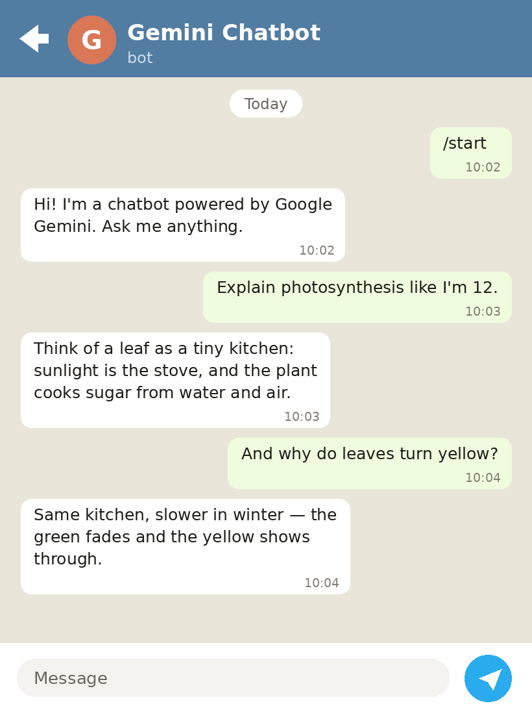

Tutorial
How to Build a Telegram Chatbot with Google AI Studio (Gemini): A Step-by-Step Guide
Most Telegram bots only answer what they were taught in advance — tap a button, get a fixed reply. An AI chatbot is different: it understands plain questions and writes its own answers. In this guide you will build one, from an empty folder, using Google's Gemini AI through a free Google AI Studio API key. The bot will hold a real conversation, remember what you just talked about, and answer follow-up questions. No coding experience is needed; every step is explained in simple words. If you'd rather not build it yourself, I can build the bot for you — for your business or a personal project — and there's a note about that at the end of this guide.
The full code from this guide lives in one project, the Telegram Gemini Chatbot on GitHub, so you can download it and compare it with your own copy as you go. If you have never made a Telegram bot at all, my earlier guide, How to Build a Telegram Bot with Python, covers the absolute basics — installing Python, what a terminal is, how BotFather works — in more depth.

Start Here: AI Chatbot Basics for Complete Beginners
If words like "API key" and "model" are new to you, read this part first. It takes three minutes, and everything after it will make sense.
What is an AI chatbot?
A normal bot follows rules you wrote: if the user types "timings", reply with the opening hours. An AI chatbot sends the user's message to an AI model — a program trained on huge amounts of text that can understand questions and write answers — and replies with whatever the model writes back. You do not write the answers. You write the small program that carries messages between Telegram and the model. That carrier program is what this guide builds.
What are Gemini and Google AI Studio?
Gemini is Google's family of AI models — the same technology behind the Gemini app you may have chatted with. Google AI Studio is a free website from Google where developers get a key that lets their own programs talk to Gemini. That key is called an API key. An API is a fixed set of ways one program can ask another program for things, and the key is the password that proves the request comes from you. Your bot will use the key to ask Gemini, "here is what the user said — what should I reply?" and Gemini answers with text.
Two things worth knowing before you start. First, the API key from AI Studio is free, with daily limits that are plenty for learning and personal use; you do not add a card. Second, the key is a password for your quota — anyone who has it can spend your limits — so it gets the same treatment as the bot token: it lives in a .env file on your computer, never in the code, never in a screenshot.
The pieces, in one picture
A user types in Telegram. Telegram delivers the message to your Python program. Your program adds the recent conversation and sends everything to Gemini with your API key. Gemini writes a reply. Your program hands it back to Telegram, and the user sees it — usually within a couple of seconds. Your program is small; the two big systems do the heavy lifting.
What You Need
- A Telegram account, to create the bot through BotFather
- A Google account, for the free AI Studio API key
- Python 3.10 or newer installed (the first guide shows the install, including the Windows PATH checkbox, step by step)
- A text editor — VS Code, Notepad or TextEdit
- About an hour of free time
Step 1: Create a Telegram Bot with BotFather
The Telegram side starts the same way as any bot. Open Telegram, search for BotFather — the real one has a blue verified tick and the username @BotFather — and send /newbot. BotFather asks two questions: a display name (anything friendly, changeable later) and a username (unique, letters/numbers/underscores only, must end in bot, never changeable). It then replies with your token, a long string that is the bot's password.
The first guide's Step 1 walks through this click by click, including what to do if a token ever leaks (/revoke in BotFather). Keep the token aside for Step 3 — it goes into the .env file, never into code.
Step 2: Get Your Free Gemini API Key from Google AI Studio
Now the AI side. This takes about two minutes:
- Go to aistudio.google.com and sign in with your Google account. If it asks you to accept the terms of service, read and accept them.
- Open aistudio.google.com/apikey directly, or click Get API key in the left-hand menu.
- Click Create API key. AI Studio may ask you to create a Google Cloud project or pick an existing one — the default suggestion is fine; it is just the folder the key belongs to.
- Your key appears, starting with
AIza. Copy it somewhere safe for the next step. You can come back to this page any time to see, copy or delete keys.
That is the whole signup. The free tier renews daily and is generous enough to build and run a personal chatbot; if you ever hit the limit mid-testing, the bot will get an error (covered in the mistakes section) and the limit resets the next day.
Step 3: Set Up the Python Project
Open a terminal and create the project folder — mkdir makes a folder, cd moves you inside it:
mkdir gemini-chatbot
cd gemini-chatbotGive the project its own virtual environment — a private box for its Python packages — and switch it on:
python3 -m venv .venv
source .venv/bin/activateOn Windows, create it with py -m venv .venv and activate with .venv\Scripts\activate. Your prompt should now start with (.venv). Then install the three libraries with pip, Python's package installer — python-telegram-bot to talk to Telegram, google-genai (Google's official SDK) to talk to Gemini, and python-dotenv to read the key file:
pip install python-telegram-bot google-genai python-dotenvNow the keys. Create a file in this folder named exactly .env (starting with a dot — choose "All files" in the save window so it does not become .env.txt) and put these lines in it, with your real keys after the equals signs:
TELEGRAM_BOT_TOKEN=123456789:AAE...your-botfather-token...
GEMINI_API_KEY=AIza...your-gemini-key...
GEMINI_MODEL=gemini-2.5-flashThe third line is optional — it picks which Gemini model answers. The flash models are the fast ones, made for chat, and the default in the code is the same value. Two warnings that save real pain: do not swap the two keys (the Telegram token and the Gemini key look nothing alike, but pasting each into the wrong line is the single most common beginner error with this project), and never upload this file anywhere. Also create a .gitignore file containing one line, .env, so Git leaves the file out if you later put the project on GitHub. Finally, create two empty code files in the folder: gemini_chat.py and bot.py. The next two steps fill them.
Step 4: The Brain — gemini_chat.py
This file is the AI half of the project, and it knows nothing about Telegram. It does three jobs: it holds the Gemini client, it remembers the recent conversation, and it turns one user message into one reply. Keeping it in its own file means you can later reuse the same brain inside a website or a WhatsApp bot without touching the Telegram code. Put this into gemini_chat.py:
import os
from google import genai
from google.genai import types
# How the bot should behave. Edit this to give your own bot a personality,
# a job, or rules ("answer like a patient maths tutor", "reply in Hindi",
# "keep answers under 100 words", and so on).
SYSTEM_PROMPT = (
"You are a friendly assistant chatting inside Telegram. "
"Answer clearly and helpfully, in plain language. "
"Keep answers reasonably short unless the user asks for detail. "
"Do not use markdown tables. Simple formatting is fine."
)
DEFAULT_MODEL = "gemini-2.5-flash"
class GeminiChat:
"""One user's conversation with Gemini, with a short memory."""
def __init__(self, api_key=None, model=None, max_turns=10):
self.client = genai.Client(api_key=api_key or os.environ["GEMINI_API_KEY"])
self.model = model or os.getenv("GEMINI_MODEL", DEFAULT_MODEL)
# max_turns counts user+bot exchanges. Older turns are dropped so
# the history (and the bill / quota use) stays small.
self.max_turns = max_turns
self.history = []
def reset(self):
"""Forget the conversation so far (the /clear command)."""
self.history = []
async def reply(self, user_text):
"""Send one message and return Gemini's reply as plain text."""
contents = self.history + [
types.Content(
role="user",
parts=[types.Part.from_text(text=user_text)],
)
]
response = await self.client.aio.models.generate_content(
model=self.model,
contents=contents,
config=types.GenerateContentConfig(
system_instruction=SYSTEM_PROMPT,
temperature=0.7,
),
)
text = (response.text or "").strip()
if not text:
raise RuntimeError("Gemini returned an empty reply.")
# Remember both sides of this exchange.
self.history.append(
types.Content(
role="user",
parts=[types.Part.from_text(text=user_text)],
)
)
self.history.append(
types.Content(
role="model",
parts=[types.Part.from_text(text=text)],
)
)
# Keep only the most recent turns.
self.history = self.history[-2 * self.max_turns:]
return textWhat matters in there, in plain words. The system prompt at the top is a standing instruction Gemini reads before every answer — it is where the bot's personality and rules live, and changing that one block of text is how you turn this general chatbot into a tutor, a support assistant or anything else. The history list is the memory: every exchange adds the user's message and the model's reply, and the whole list is sent along with each new question, which is exactly why "and why does that happen?" works — Gemini can see what "that" refers to. Only the last 10 exchanges are kept, so the memory stays small and cheap. And reply() is the one door the rest of the program uses: message in, answer out.
Step 5: The Telegram Side — bot.py
This file knows nothing about AI. It greets people, watches for commands, shows the typing indicator, and passes everything else to the brain from Step 4. It goes into bot.py in three parts, one after another in the same file. First, the imports, the key loading and the fixed texts:
import logging
import os
from dotenv import load_dotenv
from telegram import Update
from telegram.constants import ChatAction
from telegram.ext import (
Application,
CommandHandler,
ContextTypes,
MessageHandler,
filters,
)
from gemini_chat import GeminiChat
load_dotenv()
logging.basicConfig(
format="%(asctime)s %(levelname)s %(name)s: %(message)s",
level=logging.INFO,
)
logger = logging.getLogger(__name__)
# Telegram messages can be at most 4096 characters. Long Gemini replies
# are split into chunks a little under that.
CHUNK_SIZE = 4000
WELCOME_TEXT = (
"Hi! I'm a chatbot powered by Google Gemini.\n\n"
"Ask me anything — explain a topic, draft a message, brainstorm ideas, "
"practise English. I remember the last few messages of our chat, so "
"follow-up questions work too.\n\n"
"Type /help to see the commands, and /clear whenever you want a "
"fresh start."
)
HELP_TEXT = (
"Here's what I understand:\n\n"
"/start — say hello and see this intro\n"
"/help — this list\n"
"/clear — forget our conversation and start over\n\n"
"Everything else you type goes to Gemini and gets an answer. "
"Go ahead, ask something."
)
ERROR_TEXT = (
"Sorry, something went wrong while I was thinking. "
"Please try again in a moment."
)load_dotenv() is the line that reads your .env file, so the keys are available through os.getenv without ever appearing in the code itself. Next, the helpers and the four handlers — a handler is a rule that says "when this kind of message arrives, run this function":
def split_text(text, size=CHUNK_SIZE):
"""Split a long reply into Telegram-sized chunks, breaking on
newlines or spaces where possible instead of mid-word."""
chunks = []
while len(text) > size:
cut = text.rfind("\n", 0, size)
if cut < size // 2:
cut = text.rfind(" ", 0, size)
if cut < size // 2:
cut = size
chunks.append(text[:cut].rstrip())
text = text[cut:].lstrip()
if text:
chunks.append(text)
return chunks
def get_chat(context):
"""Return this user's GeminiChat, creating it on first use. Each user
gets their own, so conversations never mix between people."""
chat = context.user_data.get("gemini_chat")
if chat is None:
chat = GeminiChat()
context.user_data["gemini_chat"] = chat
return chat
async def start(update: Update, context: ContextTypes.DEFAULT_TYPE):
await update.message.reply_text(WELCOME_TEXT)
async def help_command(update: Update, context: ContextTypes.DEFAULT_TYPE):
await update.message.reply_text(HELP_TEXT)
async def clear(update: Update, context: ContextTypes.DEFAULT_TYPE):
get_chat(context).reset()
await update.message.reply_text(
"Done — I've forgotten our conversation. Fresh start. What's next?"
)
async def chat(update: Update, context: ContextTypes.DEFAULT_TYPE):
user_text = (update.message.text or "").strip()
if not user_text:
return
# Show "typing…" while Gemini thinks. It disappears on its own after
# a few seconds or when the reply arrives.
await context.bot.send_chat_action(
chat_id=update.effective_chat.id, action=ChatAction.TYPING
)
try:
reply = await get_chat(context).reply(user_text)
except Exception:
logger.exception("Gemini request failed")
await update.message.reply_text(ERROR_TEXT)
return
for chunk in split_text(reply):
await update.message.reply_text(chunk)Three details do the quiet work. get_chat() stores one GeminiChat per user inside context.user_data, which python-telegram-bot keeps separate for every person — that is why two people can chat at once without their memories mixing. The chat() handler sends the typing indicator before asking Gemini, because a "typing…" bubble tells the user an answer is coming during the second or two the model needs. And the try/except around the Gemini call means an API problem becomes one polite message to the user, not a dead bot. Last part — building the application and starting it:
def build_application():
"""Build the Telegram application. Kept separate from main() so the
wiring can be checked without starting the bot."""
token = os.getenv("TELEGRAM_BOT_TOKEN")
if not token:
raise SystemExit(
"TELEGRAM_BOT_TOKEN is not set. Copy .env.example to .env and "
"paste the token BotFather gave you."
)
if not os.getenv("GEMINI_API_KEY"):
raise SystemExit(
"GEMINI_API_KEY is not set. Copy .env.example to .env and "
"paste your free key from Google AI Studio."
)
app = Application.builder().token(token).build()
app.add_handler(CommandHandler("start", start))
app.add_handler(CommandHandler("help", help_command))
app.add_handler(CommandHandler("clear", clear))
app.add_handler(
MessageHandler(filters.TEXT & ~filters.COMMAND, chat)
)
return app
def main():
app = build_application()
logger.info("Bot is running. Press Ctrl+C to stop.")
app.run_polling(allowed_updates=Update.ALL_TYPES)
if __name__ == "__main__":
main()The checks at the top of build_application() stop the bot with a clear sentence if a key is missing, instead of a confusing error later. The message handler's filter — text messages that are not commands — is what sends ordinary chat to Gemini while /start, /help and /clear go to their own handlers. And run_polling() is the loop that keeps asking Telegram "anything new?" and dispatching what arrives.
Step 6: Run It and Have Your First Conversation
Back in the terminal, with the virtual environment on, start the bot:
python bot.pyOpen your bot in Telegram, press Start, and type a real question — then a follow-up that only makes sense with memory, like the conversation in this picture:

Try /clear and then ask the same follow-up again — this time the bot will ask what you mean, because you wiped its memory. That one experiment teaches you more about how this bot works than any diagram. Stop the bot with Ctrl+C when you are done.
Step 7: Keep the Bot Running
The bot answers while python bot.py runs on your computer, and sleeps when it stops — fine for learning and for a personal bot you switch on when needed. For a bot that answers at any hour, move the folder to a small VPS or any always-on machine, repeat the setup there, and run it under a service manager so it restarts itself; the first guide's final step covers polling vs webhooks and a ready systemd setup in detail, and all of it applies to this bot unchanged.
Stuck? Beginner Mistakes and Fixes
- "GEMINI_API_KEY is not set" (or the Telegram one). The
.envfile is missing, misnamed (.env.txtdoes not count), or the line is empty. Fix: check the file sits in the same folder asbot.py, is named exactly.env, and has no spaces around the equals sign. - Gemini replies with an API key error (400 / API_KEY_INVALID). The key in
.envis wrong or incomplete. Fix: go back to aistudio.google.com/apikey, copy the key again in full, and check it sits on theGEMINI_API_KEY=line — and that the BotFather token is on its own line, not this one. Swapping the two keys is the classic mistake here. - Quota or rate-limit errors (429). You have used up the free tier for now — heavy testing in a short burst does it. Fix: wait a bit, or until the daily reset, and consider a lighter flash model in the
GEMINI_MODELline. - ModuleNotFoundError: No module named 'google' (or 'telegram'). A library is missing, almost always because the virtual environment was off during install. Fix: activate the environment (prompt starts with
(.venv)), runpip install python-telegram-bot google-genai python-dotenvagain, and restart the bot. - The bot answers, but forgets everything between messages. Something is recreating the chat object — usually an edited
get_chat()or a bot restart between messages (restarting wipes memory; it lives in RAM, not on disk). In the code as written, memory lasts until/clearor a restart, and that is by design for a first version. - The user gets "Sorry, something went wrong…" every time. That friendly message hides the real error on purpose. Fix: read the terminal — the bot logs the actual exception right there, and it is almost always one of the key or quota problems above.
- Pasting keys into the code "just for now". That file eventually reaches GitHub or a screenshot, and a leaked Gemini key spends your quota while a leaked bot token hands over your bot. Keys stay in
.env. If one leaks: delete the key in AI Studio and create a new one; revoke the token in BotFather with/revoke.
Frequently Asked Questions
Is the Gemini API really free?
Yes — the AI Studio free tier gives you a key with daily limits and needs no card. It is meant for building and testing, and it comfortably covers a personal chatbot. Paid tiers exist if a bot ever outgrows it, but nothing in this guide needs one.
Which Gemini model should I use?
The flash models. They are the fast, chat-shaped ones, and gemini-2.5-flash is a good default. The model is one line in .env, so trying another is a ten-second experiment, not a code change.
Does the bot remember our whole conversation forever?
No, and that is deliberate. It keeps the last 10 exchanges, in memory only — a restart or a /clear wipes it. Long memory is possible (save the history to a database), but short memory is faster, cheaper on quota, and honestly enough for most chats.
Can it reply in Hindi or other languages?
Yes. Gemini answers in the language it is spoken to, and you can also put "reply in Hindi" (or any language) into the system prompt in gemini_chat.py to make it the bot's default.
Can I give the bot a specific job?
That is what the system prompt is for. Describe the job there — "you are the support assistant for my bakery; answer from this price list; be brief and polite" — and the same code becomes that bot. Teaching it your own documents is a bigger step (that is called grounding or RAG), but the personality-and-rules version above covers a lot of real uses.
Is this the same as the Telegram bots with buttons?
Same Telegram side, different brain. Buttons and fixed answers (the first guide) suit menus and FAQs with known answers. An AI chatbot suits open questions. Real business bots often mix both — buttons for the common paths, AI for everything else.
You Did It: What You Have Now
If you followed along, here is what is sitting on your computer:
- ✓ A Telegram bot of your own, created with BotFather
- ✓ A free Gemini API key from Google AI Studio, stored safely in a
.envfile next to the bot token - ✓ A working AI brain (
gemini_chat.py) with a system prompt you control and a short per-user memory - ✓ A Telegram side (
bot.py) with/start,/help,/clear, a typing indicator and polite error handling - ✓ A bot that holds a real conversation — follow-up questions included — while the script runs
- ✓ The full project on GitHub to compare against, reuse and extend
From here the pattern is yours to bend: change the system prompt and it is a different bot; swap the memory for a database and it remembers for good; add buttons from the first guide and it does both jobs at once.
Need a Telegram Bot Built for You?
If you want a Telegram bot built for you, I build bots like this one — AI chatbots powered by Gemini, FAQ and support bots, news and alert bots, and price-tracking bots — for small businesses and personal projects. A bot for your business can answer customer enquiries in plain language, handle routine support questions around the clock and pass the tricky ones to you. You can see my work on GitHub, including the Telegram Gemini Chatbot built in this guide, or reach me at subhralayek7@gmail.com.
I'm Shubhranil Layek, a Python developer based in Durgapur, West Bengal, and I'm available for freelance projects. If you have a bot in mind, write to me with what it should do — I'll reply with how I would build it.
For more guides and projects, visit Shubhranil Layek's developer website or browse the blog.